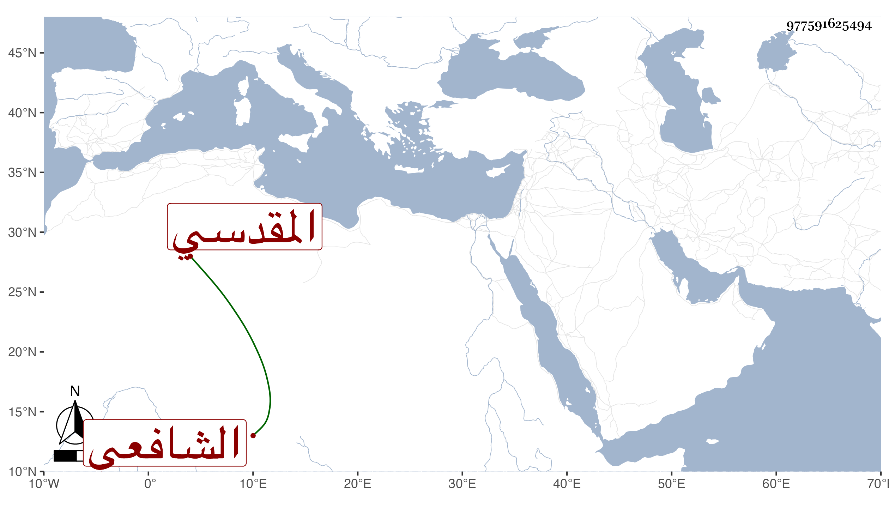

0902Sakhawi.DawLamic.ITO20230111-ara1.EIS1600.977591625494
Biography ID: 977591625494
1099
سيف بن أبي الصفا إبراهيم بن علي بن يوسف أبو بكر المقدسي الشافعي أخو الكمال محمد الحنفي الآتي وتقدم في الفنون مع الديانة والمحاسن بحيث أنه لم يوافق والده وجماعة بيته في دعوى الشرف ولا حمل شظفه ، والثناء عليه مستفيض ورأيت له تقريظا لمجموع التقي البدري أبدعه خطا ونثرا ونظما ومن نظمه فيه :
| جزيت خيرا تقي الدين حيث جلا | مجموعك الحسن بالحسنى وذاك نقي |
| وفي وفى تقي قد وقيت أذى | فأنت حقا بكلتي حالتيك تقي |
